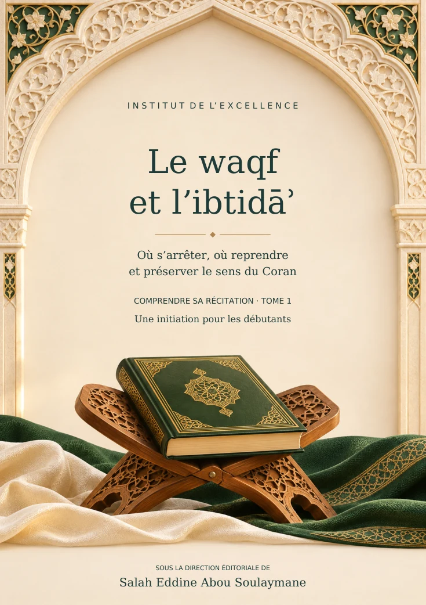
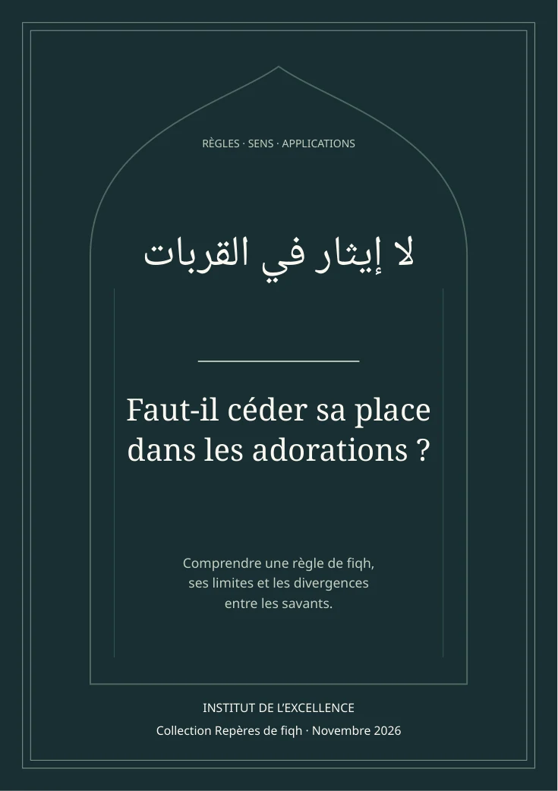

Gratuit
GratuitHéritages & modèles
Jeunes Compagnons, grands héros
Huit parcours de foi, de science et de caractère.
47 pages · PDFDécouvrir
Des livres conçus pour comprendre, apprendre et progresser. Découvrez les ouvrages de l’Institut de l’Excellence, disponibles gratuitement au format PDF.

Des textes de transmission, de pédagogie et de réflexion, à consulter ou à conserver gratuitement.
5 ouvrages affichés
GratuitHuit parcours de foi, de science et de caractère.
Où s’arrêter, où reprendre et préserver le sens du Coran.
 Gratuit
GratuitEnseigner dès le plus jeune âge, accompagner avec constance.

GratuitFaut-il céder sa place dans les adorations ?.
Aucun livre ne correspond à cette recherche.
Essayez un autre mot ou sélectionnez « Tous les livres ».
Éditer des livres qui rendent les savoirs plus clairs, plus proches et plus utiles.
Notre ligne éditoriale : une lecture accessible sans renoncer à la rigueur, une présentation soignée et des références permettant d’aller plus loin.
Les publications sont offertes en lecture et au téléchargement. La gratuité ne supprime pas les droits d’auteur : chaque ouvrage conserve ses mentions et ses conditions d’utilisation.
Choisissez un titre, lisez-le en ligne ou téléchargez son PDF.